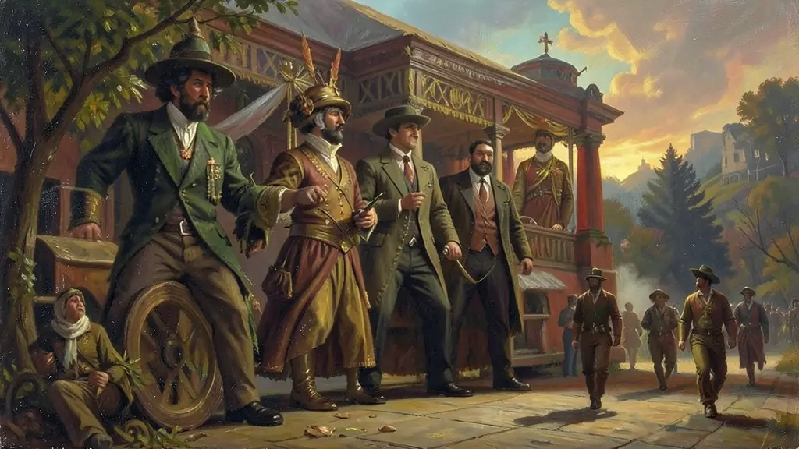
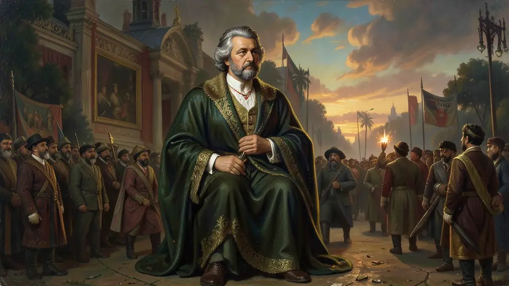

Capítulo 01
1. Revolução de 1930 e a Ruptura de Paradigm
A República Velha morreu quando a elite de São Paulo indicou Júlio Prestes, rompendo o pacto com Minas Gerais. Vargas, derrotado nas urnas fraudadas, uniu-se a militares (tenentes) e políticos dissidentes. A Revolução de 1930 marcou o fim do domínio agrário exclusivo. Vargas criou o Ministério do Trabalho e o Ministério da Educação, sinalizando que o Estado passaria a gerir as massas e a cultura de forma profissionalizada.
Capítulo 02
2. 1932: O Levantamento Paulista e o MMDC
São Paulo sentia-se 'vencido e humilhado' pela interventoria varguista. O movimento MMDC (homenagem aos jovens mortos em conflito) reuniu 30 mil homens na frente de batalha contra as tropas federais no Vale do Paraíba. Embora SP tenha sido derrotado no campo de batalha (Batalha do Túnel), a pressão política forçou Vargas a democratizar o país temporariamente, levando à sofisticada Constituição de 1934.

Capítulo 03
3. Polarização Ideológica e Intentona Comunista
O Brasil dos anos 30 era um microcosmo da Europa. Plínio Salgado chefiava a Ação Integralista Brasileira ('Anauê!'), com forte estética nazifascista. Do outro lado, o cavaleiro da esperança, Luís Carlos Prestes, tentou um levante armado em 1935 (Intentona Comunista). O fracasso do levante deu a Vargas o pretexto perfeito para o estado de sítio e posterior golpe ditatorial em 1937.

Capítulo 04
4. O Estado Novo: DIP e Culto à Personalidade
Entre 1937 e 1945, o Brasil viveu uma ditadura explícita. O Congresso foi fechado e o DIP passou a controlar as notícias. O rádio (A Hora do Brasil) tornou-se a voz do imperador eleito. Foi o auge do controle social: Vargas criava feriados, campeonatos de futebol e sambas patrióticos para doutrinar a massa enquanto sua polícia política prendia e torturava opositores. Contraditoriamente, este foi o período de maior orgulho industrial, com a fundação de Volta Redonda (CSN).
Capítulo 05
5. O Brasil na Segunda Guerra e o Fim da Linha
O pragmatismo de Vargas permitiu ao Brasil lucrar com a guerra fornecendo matérias-primas aos dois lados inicialmente. Porém, o bombardeio de navios brasileiros por submarinos alemães e a pressão dos EUA forçaram o Brasil a declarar guerra ao Eixo. O envio de 25 mil 'Pracinhas' para a Itália em 1944 criou uma crise de legitimidade: os soldados lutavam pela democracia no exterior enquanto viviam uma ditadura em casa. O movimento do 'Queremismo' (queremos Getúlio) não foi suficiente para impedir sua deposição pelos próprios militares em 1945.
A monumental, contraditória e longínqua estruturação temporal fixada na historiografia alcunhada meramente de Era Vargas, (1930-1945), desdobra a inconteste mais decisiva colossal reformatação na essência das burocracias nascentes e molduras operantes instituintes modernizadas do Estado e identidade brasileira no tortuoso transcorrer e consolidação tumultuada progressista e autoritária no fulgurante amadurecimento século XX nacional formativo transicional da nação contemporânea.
Bifurcada didaticamente nas interrupções dramáticas temporais sucessivas nos trópicos engloba (Governo apaziguador revolucionário Provisório, Instante iluminado efêmero da democrática Constitucional de 1934 à ditatorial sanguinária fascistóide outorgada centralizada brutal asfixiante do implacável Estado Novo); Esse colosso histórico centralista foi a forja inconteste aglutinadora formativa forçosa dos eixos motores substitutivos importadores industriais pesados alçando o Brasil de seu secular papel periférico roçador da enxada feudalizadora do café pro alicerce de turbinas do nacionalismo das riquezas primárias monopolizadas em chaminés das usinas e minerações basilar siderurgica (CSN).
Ao alunano e avaliador exames prementes cobra-se exíguos reconhecer Vargas sob a balança do líder estadista e caudilho; A figura dúbia dialética indelével enaltecida endeusadamente na demagogia e mitificação por edificar e forjar a emancipação operária protecionista do escravagismo preterito capitalista fabril mas invariavelmente enraizando a cruel mordaça repressiva asfixiante violenta castradora da autonomia liberdade política, a consolidação centralista das engrenagens interventoras impiedosas e na eliminação sumária oponente oposicionista liberal socialista dos amordaçados democratas esmagados ditos 'comunistas perigosos'.
Fonte: FAUSTO, Boris. História do Brasil. Edusp, 2012.
Atividades interativas
Questões para fixar
A Carta de 1937, outorgada por Vargas, ficou conhecida como 'A Polaca' devido à sua semelhança com a constituição fascista da Polônia. Sua principal característica era:
O 'Queremismo' foi um movimento de massa que surgiu ao final da Segunda Guerra pedindo:
Qual foi o evento que motivou a Revolução de 1930 no Brasil?
Qual foi o resultado político da Revolução Constitucionalista de 1932?
Qual foi o objetivo do Plano Cohen em 1937?